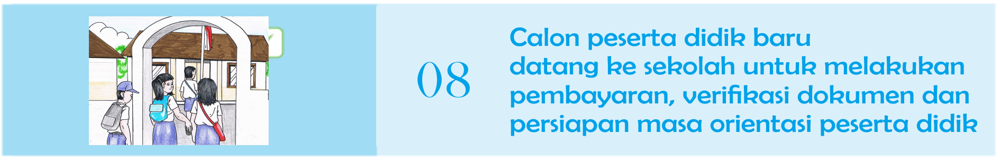
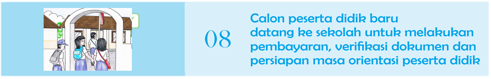
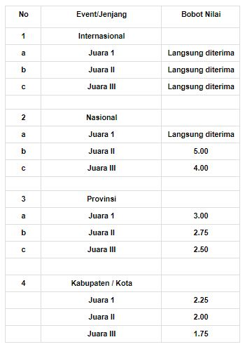
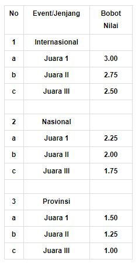

JADWAL PENDAFTARAN
Pengumuman PPDB :
8 s.d 13 Juni 2021

Dibuka : 17 Juni 2021, mulai pukul 08.00 WIB
Ditutup : 25 Juni 2021, pukul 16.00 WIB
Evaluasi dan Seleksi :
26 s.d 29 Juni 2021
Pengumuman Hasil :
30 Juni 2021 selambatnya pukul 23.55 WIB
Daftar Ulang :
1 s.d 3 Juli 2021
Hari Pertama Masuk Sekolah : Tanggal, 13 Juli 2021
SYARAT PENDAFTARAN
Berkas syarat pendaftaran yang harus disiapkan oleh calon peserta didik baru SMPN 1 Cilawu adalah :
- Ijasah / Surat Keterangan Lulus dari sekolah asal SD / MI atau sederajat (Dokumen Asli)
- Buku Rapor SD / MI atau sederajat
- Daftar Nilai Rapor SD / MI atau yang sederajat semester 1 s/d 11 untuk mata pelajaran Bahasa Indonesia, Matematika, Bahasa Inggris, dan IPA dengan rentang nilai 0 (nol) sampai dengan 10 (sepuluh) hingga 2 (dua) digit di belakang koma (Dokumen Asli)
- Piagam Penghargaan jika mempunyai prestasi diluar bidang akademik baik berjenjang maupun tidak berjenjang. (Dokumen Asli)
- Kartu Indonesia Pintar / Kartu Program Keluarga Harapan (PKH) / Kartu Banyumas Pintar (Untuk calon pendaftar yang memilih jalur afirmasi / keluarga miskin)
- Pakta Integritas
- Surat pernyataan sehat yang memuat pernyataan sehat pendengaran dan tidak buta
- warna (dibuat sendiri dan ditandatangani orang tua calon peserta didik baru)
- Surat Keterangan Keluarga Tenaga Medis RS Rujukan Covid-19 (jika calon peserta didik merupakan anak dari keluarga tenaga medis / Paramedis RS Rujukan Covid-19) (Dokumen Asli)
- Kartu keluarga / Surat keterangan Domisili dari RT / RW (Dokumen Asli)
- Akta Kelahiran (Dokumen Asli)
- Pas photo
Format syarat no. 5 s/d 7 dapat didownload pada menu Syarat & Alur Pendaftaran
Semua berkas di scan (difoto) untuk selanjutnya di upload saat melakukan pendaftaran
ALUR PENDAFTARAN
- Calon peserta didik SMK Negeri dapat mendaftarkan diri melalui jalur prestasi atau afirmasi.
- Calon peserta didik SMK dapat mendaftarkan diri pada 3 (tiga) pilihan kompetensi keahlian pada sebanyak-banyaknya 2 (dua) satuan pendidikan;
- Pilihan kompetensi keahlian tersebut huruf b dapat dipilih calon peserta didik pada 1 (satu) atau 2 (dua) satuan pendidikan.
- Calon peserta didik SMK Negeri dapat mengubah pilihan kompetensi keahlian dan/atau satuan pendidikan selama masa pendaftaran.
 

Pendaftaran Jalur Afirmasi
Jalur Afirmasi / keluarga miskin adalah jalur seleksi yang diperuntukan untuk calon peserta didik baru dari keluarga tidak mampu secara ekonomi yang alokasi daya tampungnya sebesar 20% dari daya tampung peserta didik baru secara keseluruhan. Rinciannya adalah sebagai berikut :
- Seleksi calon peserta didik pada jalur ini memprioritaskan calon peserta didik dari keluarga miskin sebanyak 20% (dua puluh persen) dari daya tampung.
- Apabila jumlah pendaftar pada jalur keluarga miskin melebihi 20% (dua puluh persen), maka akan dilakukan seleksi dengan urutan :
- Nilai Rapor Semester I s.d XI SD / MI atau yang sederajat, yaitu nilai mata pelajaran Bahasa Indonesia, Matematika, Bahasa Inggris, dan IPA. Apabila hasil Rapor Semester I s.d V untuk nilai Bahasa Indonesia, Matematika, Bahasa Inggris, dan IPA dalam rentang 0 (nol) sampai dengan 100 (seratus) maka nilai dikonversi menjadi rentang nilai 0 (nol) sampai dengan 10 (sepuluh) hingga 2 (dua) digit di belakang koma.
- Usia yang paling tinggi calon peserta didik.
Pendaftaran Jalur Prestasi
Jalur seleksi Prestasi adalah jalur seleksi yang menggabungkan nilai Prestasi Akademik atau Nilai Rapor dan Nilai prestasi Kejuaraan. Rinciannya adalah sebagai berikut :
- Nilai Rapor Semester I s.d V SMP atau MTs atau yang sederajat, yaitu nilai mata pelajaran Bahasa Indonesia, Matematika, Bahasa Inggris, dan IPA. Apabila hasil Rapor Semester I s.d V untuk nilai Bahasa Indonesia, Matematika, Bahasa Inggris, dan IPA dalam rentang 0 sampai dengan 100 maka nilai dikonversi menjadi rentang nilai 0 sampai dengan 10 (sepuluh) hingga 2 digit di belakang koma.
- Nilai Kejuaraan, yaitu nilai yang diberikan kepada calon peserta didik karena yang bersangkutan memiliki prestasi di bidang akademik dan atau non akademik yang diperolehnya pada jenjang pendidikan SMP atau MTs atau yang sederajat, dengan ketentuan :
- Calon peserta didik dengan prestasi Juara I, II, III Internasional dan Juara I Nasional dari kejuaran yang diselenggarakan secara berjenjang langsung diterima.
- Nilai kejuaraan berjenjang merupakan kejuaraan atau lomba atau invitasi atau sayembara yang diselenggarakan oleh instansi atau lembaga pemerintah sesuai kewenangannya di bidang akademik dan/atau non akademik dengan pembobotan nilai prestasi sebagai berikut :

- Tambahan nilai kejuaraan diambil dari prestasi tertinggi tiap jenis cabang dari nilai kejuaraan yang diperoleh
- Kejuaraaan tidak berjenjang merupakan kejuaraan atau lomba atau invitasi atau sayembara selain yang tersebut pada jenis ? jenis kejuaraan berjenjang, yang diselenggarakan oleh instansi atau lembaga pemerintah atau induk olahraga atau masyarakat atau perguruan tinggi sesuai kewenangannya.
- Kejuaraan tidak berjenjang yang diberi bobot nilai adalah kejuaraan tidak berjenjang tingkat provinsi, nasional dan internasional.
- Bobot nilai kejuaraan tidak berjenjang sebagai berikut :

- Pada saat pelaksanaan pendaftaran, sertifikat atau piagam penghargaan atau kejuaraan tidak wajib dilegalisasi, dan akan dilakukan validasi data sesuai dengan aslinya dengan waktu yang akan diberitahukan sesuai kondisi kedaruratan Covid-19.
- Sebagai bentuk penghargaan terhadap karya kemanusiaan dalam penanganan pandemi Covid-19, maka Pemerintah Provinsi Jawa Tengah memberikan penghargaan kepada calon peserta didik yang merupakan putera dan puteri tenaga medis dan paramedis yang bertugas pada Rumah Sakit rujukan Covid-19, berupa penghargaan pemberian dispensasi langsung diterima.
- Ketentuan sebagaimana tersebut diatas dibuktikan dengan surat keterangan yang diterbitkan oleh Kepala Rumah Sakit rujukan Covid-19 tempat orang tua/wali calon peserta didik melaksanakan tugas, dan/atau oleh Kepala Dinas Kesehatan Provinsi dan/atau Kepala Dinas Kesehatan Kabupaten atau Kota